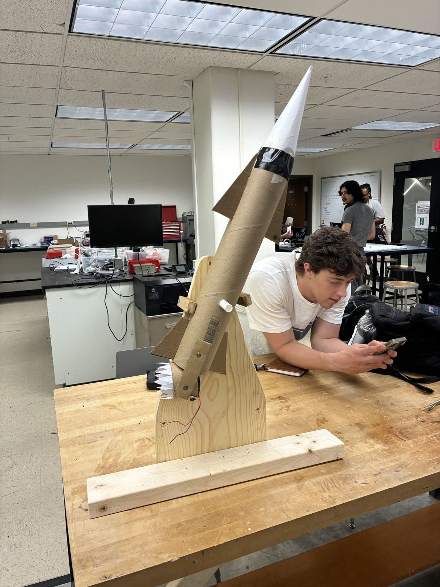
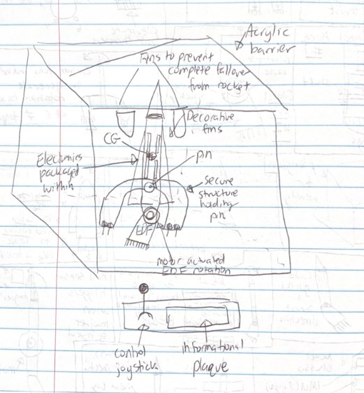
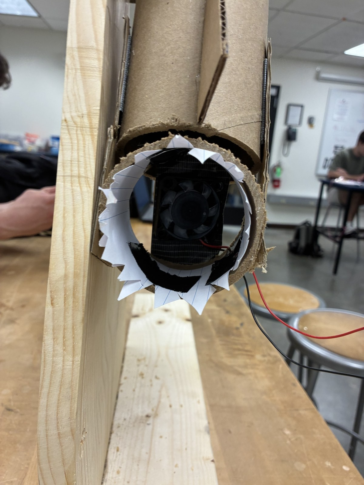
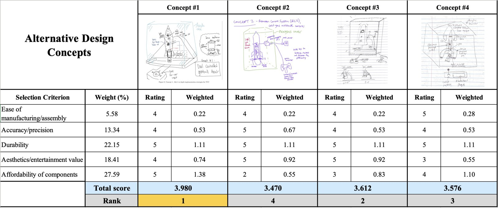
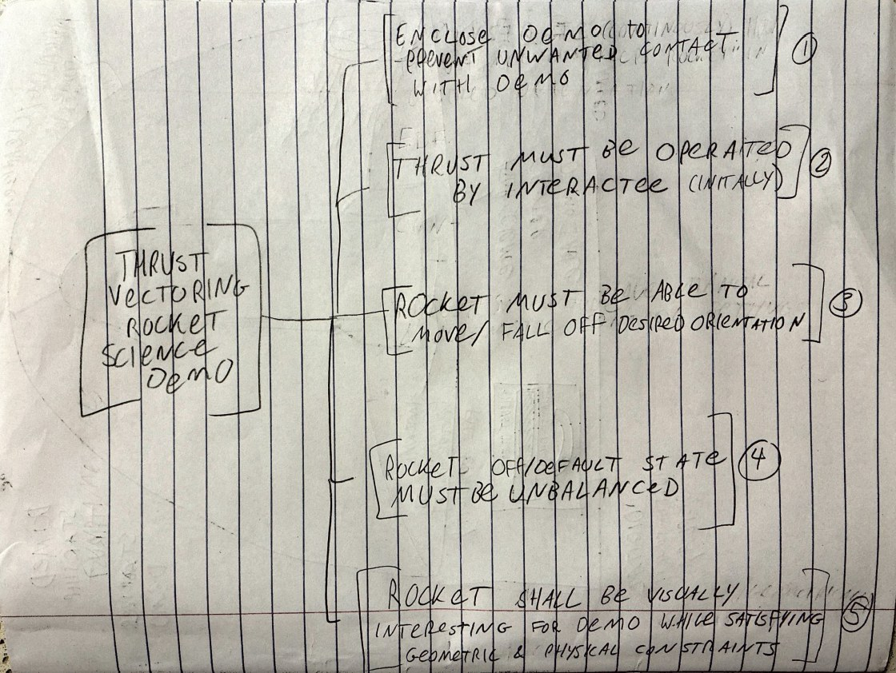
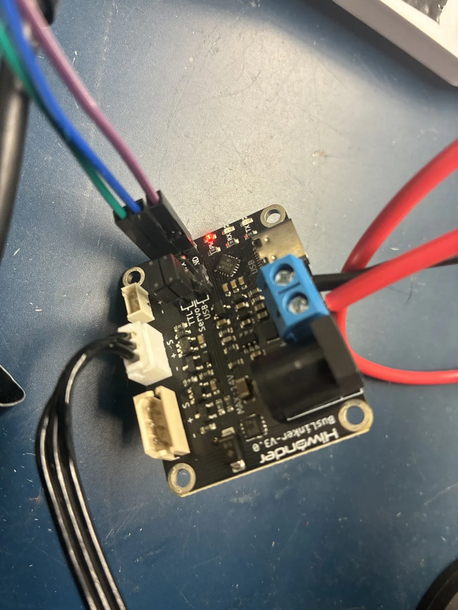
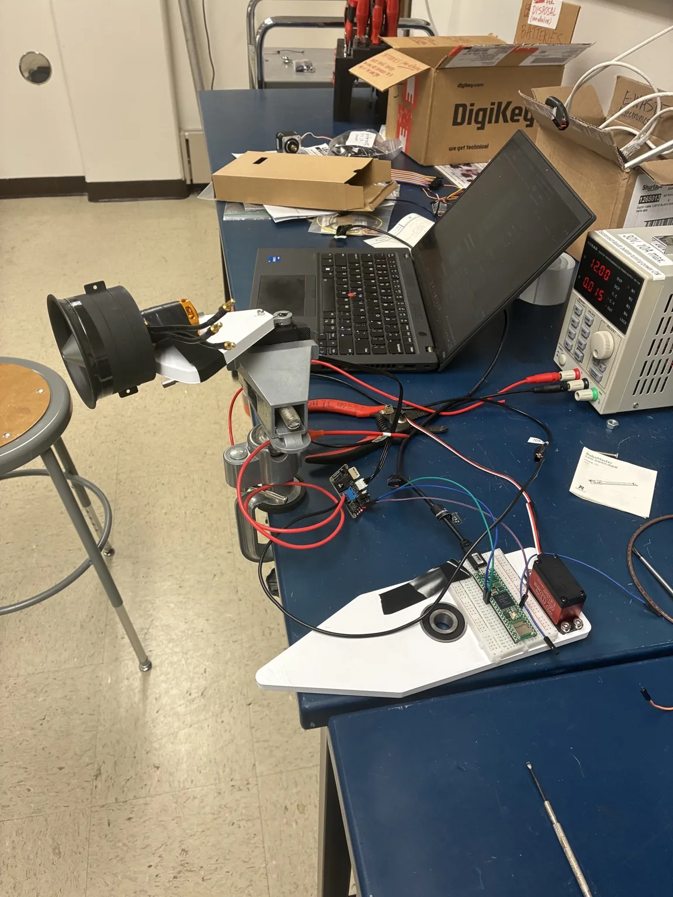
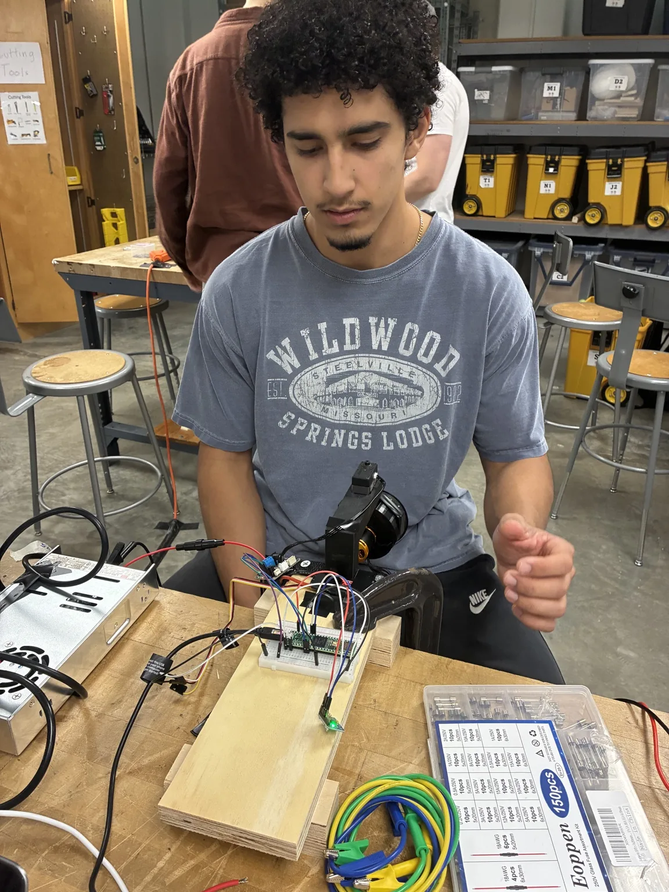

Senior design · WashU
Thrust Vector Control
In progress · Prototype development and bench testing. This page will be updated as integration and testing continue.
Designing and integrating a fan-powered, one-axis stabilization exhibit for the St. Louis Science Center.
- Role
- Mechanical design & hardware integration
- Context / status
- In development · Fall 2026
- Tools & methods
- Mechanism design · Actuator sizing · Embedded systems · Control modeling

01
Overview
Our team is developing an interactive exhibit that demonstrates how feedback control can stabilize an inherently unstable system. A rocket-shaped body rotates about one axis, with its center of mass above the pivot. Without corrective action, gravity tips it away from vertical.
A ducted fan mounted near the base redirects thrust through a servo-driven gimbal. Orientation sensing provides feedback so the controller can command a corrective fan angle. The goal is to make the relationship between a visitor’s input, the rocket’s motion, and the controller’s response easy to see.
02
My contribution
I developed one of the team’s four design concepts: a pinned rocket with its center of gravity above the pivot, limited travel, a motor-driven EDF gimbal, onboard sensing, and a joystick interface inside a clear enclosure.
My development work includes sensor-to-actuator testing, BusLinker and servo communication, EDF throttle ramping, and coordinating these interfaces in the integrated Teensy sketch. These tasks support our shared work on the complete exhibit; the final design combines decisions and contributions from the whole team.

03
Design & development
Design requirements
Our customer interview focused on elementary school children and families, with school groups as a secondary audience. A successful exhibit needs immediate feedback, a clear connection to real rocket control, and the durability to handle repeated interaction.
The brief calls for a visual explanation supported by a short plaque, accessible controls, and no combustion or explosions. Reliability, electrical protection, heat management, and a controlled resting state are design requirements to verify as the prototype develops.
Mechanical development
Physical mockup
We used wood, cardboard, paper, PVC pipe, pins, hot glue, and a dummy fan to test the arrangement before committing to detailed hardware. The model made three issues clear: the gimbal and body rotation axes need careful alignment, travel stops need thoughtful placement, and pivot friction can mask the behavior we want to demonstrate.

01
Axis alignment
The fan’s corrective rotation must match the rocket’s allowed plane of motion.
02
Travel limits
Travel stops should keep the body within a recoverable range without obstructing it.
03
Pivot friction
The mockup motivated a bearing-supported pivot for a more responsive system.
Concept selection
The concepts included a bearing-mounted gimbal system, a compressed-air reaction-control approach, an exhibit-focused rocket with visual feedback, and my pinned-gimbal concept. We compared manufacturing and assembly, accuracy, durability, entertainment value, and component cost.
The team used the Analytic Hierarchy Process to weight those criteria, followed by a weighted scoring matrix. The report identifies Concept 1—the bearing-supported, servo-gimbaled fan with IMU feedback and dial input—as the preferred direction. That selection is a design decision, not evidence of final hardware performance.
See the team’s selection matrix

See the functional decomposition

Dynamics and control
The engineering work connects the rocket’s unstable dynamics, the feedback controller, and the actuator’s ability to move the fan. The models guide component choices and testing; real hardware behavior will determine the final parameters.
Rotational dynamics
I₀ θ̈ = mg r₀ sin θ − Fₜ R sin φ
Gravity produces the destabilizing moment, while redirected thrust supplies the corrective moment. Mass, inertia, center-of-gravity height, and fan placement all affect the available control authority.
Feedback controller
u(t) = Kₚ e(t) + Kᵢ ∫ e(t) dt + Kᴅ de(t)/dt
The proposed PID controller compares the target angle with the measured angle and commands the gimbal. The report describes simulation and gain-tuning work, including the need to filter noise before the derivative term. Servo delay and measured sensor behavior still need to inform hardware tuning.
Actuator sizing
The servo-sizing model estimates the torque needed to rotate the fan through the required sweep in a target time. It accounts for fan inertia and an idealized acceleration/deceleration profile. Friction, linkage geometry, and torque available at speed must also be considered when selecting and testing the actuator.
Target angle→Controller→Fan gimbal→Rocket motionIMU measurement feeds the body angle back to the controller.
Bench testing and integration
I tested the servo, IMU, and EDF separately before combining their interfaces in a Teensy 4.1 sketch. Getting the BusLinker working required checking UART wiring and selecting the correct Servo-TTL jumper configuration. Once communication worked, we could test gimbal motion alongside the fan hardware.


EDF power troubleshooting
The EDF made power transients part of the integration work. We moved toward higher power draw in steps, rather than jumping straight to a larger throttle command. Sudden stops also coincided with PSU shutdowns; our working diagnosis was a voltage overshoot reaching the supply’s protection threshold. That explanation still needs transient measurements to confirm.
The revised sketch ramps the ESC command up and down for normal operation. This makes load changes more gradual, but it is not a guarantee against a supply trip. Immediate minimum-throttle commands remain separate from the normal ramped stop.

Coordinating the sensor, servo, and EDF
The main loop keeps serial commands and throttle ramping active while scheduling sensor-to-servo updates every 20 ms. The ramp changes the ESC pulse by 2 µs every 50 ms, with a 50% command limit for bench testing. These are command settings, not measured RPM, thrust, or power percentages.
View the coordination loop
void loop() {
unsigned long now = millis();
readSerialCommands();
updateThrottleRamp();
if (now - lastServoUpdate >= SERVO_UPDATE_MS) {
lastServoUpdate = now;
if (imuConnected) {
updateGyroControl();
}
}
if (now - lastStatusPrint >= STATUS_INTERVAL_MS) {
lastStatusPrint = now;
printStatus();
}
while (Serial2.available() > 0) {
Serial2.read();
}
}Excerpt from the supplied integrated test sketch, with comments and extra blank lines removed. Helper functions and initialization are omitted.
The MPU6050 includes an accelerometer and gyroscope, but this version uses gyroscope rate feedback to command the servo. It does not yet estimate absolute tilt or demonstrate stable balancing. The sketch also includes arming, status output, and an IMU-fault response; it does not include a communication watchdog.
View the team’s code, CAD, and project files on GitHub ↗
Essential components
Core prototype hardware and power plan. The ordering sheet lists an Arduino Nano; the current integrated sketch uses Teensy 4.1.
| Subsystem | Component | Purpose / status |
|---|---|---|
| Controller | Teensy 4.1 | Coordinates sensor reads, servo commands, and ESC output. |
| IMU | GY-521 / MPU6050 | Six-axis sensor; the current sketch uses Z-axis angular velocity. |
| Gimbal servo | HiWonder HTD-30H | Positions the fan gimbal. |
| Servo interface | HiWonder BusLinker | Serial interface between Teensy and bus servo. |
| Thrust | 64 mm EDF | Ducted fan mounted on the gimbal. |
| Fan drive | Hobbywing Skywalker 50A ESC | Receives throttle pulse commands from Teensy. |
| Main power | 12 V DC supply | Ordering sheet specifies 60 A / 720 W; final power configuration remains under review. |
| Interface computer | Raspberry Pi 5 + independent USB-C supply | Planned interface and logging computer. |
| Structure & wiring | Flanged bearings, 12/18 AWG wiring, XT60 connectors, fuses | Pivot support, power distribution, and prototype assembly. |
04
Results & next steps
The team completed the customer requirements, physical mockup, concept selection, and initial engineering models. Servo communication and EDF bench tests now support integration work, and the combined test sketch coordinates rate-responsive servo motion with ramped throttle commands. Stable balancing and exhibit readiness have not yet been demonstrated.
Next steps are the integrated prototype, hardware control tuning, and checks against the noise, enclosure, and repeat-use requirements.